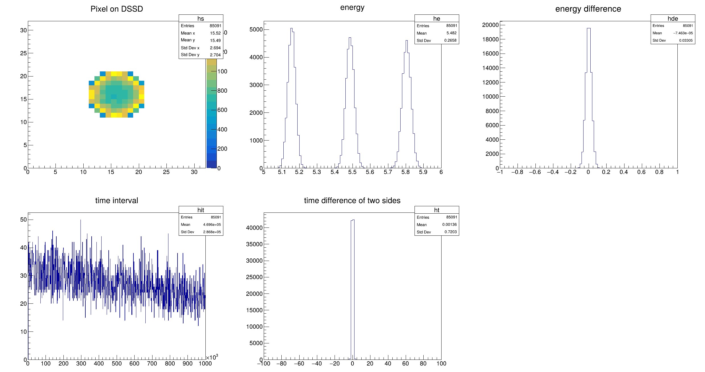

简介
本项目是 PKUXIADAQ 的魔改版本，保留了原来的 UI 界面和对应的功能同时增加了在线（online）功能。在线依赖于iceoryx提供的共享内存机制，所以程序会实时从内存中读取数据并绘图。鉴于实验设置百花齐放，本项目难以覆盖所有的情形，所以仅提供一个在线分析的框架，数据分析和画图的过程由用户完成。
下载和安装
依赖
- iceoryx，2.06
- cmake，3.10 以上
- ROOT，6.28 以上
- PLXSDK，8.23，
Tip
实际除了 iceoryx 和 PLXSDK 的版本以外，cmake 和 ROOT 版本并没有硬性要求，只要能编译能跑就行。PLXSDK 即控制 XIA 硬件的采集卡的驱动，上面提供的是官方版本，也可以在 PKUXIADAQ 中下载对应的压缩包或者使用 XIA 提供的版本，三者是一模一样的。
iceoryx
参照 iceoryx 的官方文档下载和安装 iceoryx。注意本项目中使用的版本 2.06，所以下载后，需要用 git 命令切换版本
然后再进行文档中的编译安装步骤。
PLXSDK
下载后将 PlxSdk 解压到自己喜欢的目录，并将该目录设置为环境变量
可以该命令保存到 ~/.bashrc 。
编译 PlxApi
测试 PlxApi
编译驱动
编译 PLXSDK 的过程遇到问题可以参考PKUXIADAQ 的文档。
Important
如果是从官网下载的 PLXSDK，并且使用的系统是 Ubuntu 20.04 或者 22.04，编译错误时参考 Ubuntu 编译 PLXSDK。
下载
从 github 下载
编译
打开目录
cmake 构建，设置源文件为当前目录（.），编译出来的文件放在 build 文件夹。
用 4 个线程编译
开始使用
由于本项目只是一个框架，而且实际使用需要结合 XIA 获取使用，所以并没有实质的包含真实的获取硬件和探测器的在线程序试用。
在接上获取后，可以运行 ./build/bin/gddaq，会弹出一个和 PKUXIADAQ 一模一样的 UI，按照 PKUXIADAQ 的使用方式使用。
如果仅仅测试在线框架和软件本身，可以参考下一节的示例及测试，里面包含一个模拟的获取系统和对应的在线程序。
如果是要应用该框架到真实的获取和探测器上，详细参考上手指南。
示例及测试
本项目包含一个示例，在 examples 目录下，示例中包含两个程序，在编译后可以在 build/examples 中看到
alpha_source_dssd_simulationonline_example
简单来说，alpha_source_dssd_simulation 模拟了用 32\(\times\)32 双面硅微条探测器测量 3\(\alpha\) 源，同时模拟了 XIA 获取持续地输出数据。online_example 则是一个在线程序的示例，用以实时展示测试数据。
运行测试
打开一个新的终端，运行程序
该程序是 iceoryx 提供的，如果该程序不存在或者运行失败，参考 iceoryx 文档。该程序提供了一个共享内存的平台，其它的依赖于 iceoryx 的程序都需要运行该程序。
打开第二个新的终端，运行程序
该程序用于给在线程序提供数据。
打开第三个新的终端，运行程序
该程序是真正的在线程序，前面的都是铺垫。之后写在线程序可以参考该程序。运行后会弹出一个 ROOT 的窗口，里面出现实时刷新的图。如下图

注意到运行该程序时需要输入一些参数，简单来说
-r 0表示的是 run 0-c 0表示的是 crate 0
这两个参数实际实验时需要根据实际情况调整，这里作为示例不需要调整。
文档结构
本文档分为以下部分